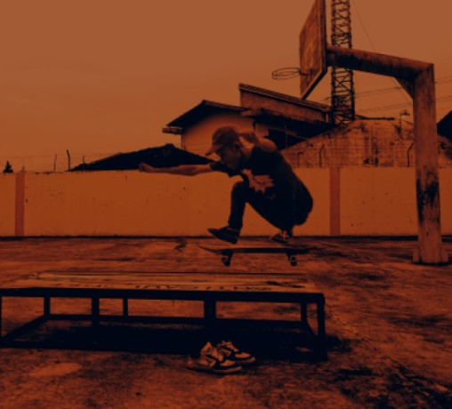

|  |
TENTANG SAYA & SEJARAH SKATEBOARD INDONESIA |
|
TENTANG SAYA NAMA :Andre Wardana. ALAMAT :Grogo Kutoanyar, Kedu, Temanggung, Jawa Tengah. HOBI :Skateboar, Fotografi, Desaingrafis. SEJARAH SAKTEBOARD INDONESIA Semenjak boomingnya Skateboard di Indonesia di awal tahun 2000an perkembangan skateboard di Indonesia semakin berkembang, di dominasi oleh skater- skater Jakarta dan Bandung sekarang sudah ada diberbagai kota di Indonesia seperti di Sumatra ,Medan,Padang, Palembang, Lampung. Selain itu di di Jawa sendiri ada Jogyakarta, Semarang, Malang, Surabaya, Solo , ada juga dari Balik papan ,Samarinda,Sulawesi, dan Bali, diperkirakan komunitas Skateboard lebih dari ribuan orang di Indonesia Olah raga Skateboard yang di sukai oleh orang yang berjiwa muda ini memang berbeda dengan olah raga yang lain, perlu ketekunan,kesabaran dan tekat yang kuat untuk mahir bermain Skateboard, semakin dalam kita mempelajari semakin tinggi level kita untuk dicoba, tantangan mulai berkembang dari hanya bermain di jalan mulai beralih di tangga tangga, Handrail, dan Gap. Dahulu bila ada Event Nasional paling banyak peserta dari Jakarta dan Bandung sedangkan sekarang untuk pesertanya sudah mulai dari berbagai daerah di Indonesia dan tidak sedikit dari skater-skater daerah yang berprestasi di Event-event nasional. Semenjak adanya asosiasi dari para oldschool/senior biasa di sebut ISA membuat event event di Indonesia mulai terorganisir dengan baik sponsor brand pun mulai masuk untuk Event event bertaraf Nasional maupun International didukung mulai menjamurnya skateshop atau toko toko olah raga extreme dan sekelas distro yang menjual produk skate di Indonesia membuat Skateboard mulai berkembang pesat. Sarana skatepark pun juga berubah dahulu cuma standart besi, box dan rail , sekarang alat yang dipertandingkan sudah setaraf internasional, arah fashionpun berubah dari hiphop ke punk and natural. Style yang casual ,bebas dengan memakai pakaian bermerek skateboard dan sepatu skate adalah ciri - ciri anak skate. Bisa dibilang komunitas anak skate selalu meng up date perkembangan skateboard karena didasarkan dari oleh raga ini olah raga lifestyle olah raga yang berkembang dari lingkungannya sendiri ,seperti film skate yang terkenal Dog Town tentang asal mulanya skate di Negara asalnya. Komunitas mulai bekembang, pergaulan mereka pun tidak hanya sekitar daerahnya saja ,seiring banyaknya Event-event skate di luar Jawa membawa akraban antara sesama skater mulai terjalin,dengan satu visi dan misi mengembangkan olah raga skateboard membuat persaudaraan lebih terasa erat. Prestasi para skater skate Indonesia boleh juga di banggakan karena mereka juga sering memenangkan pertanding mancanegara seperti baru baru ini Putu yogi mendapat emas satu satunya di Olympiade Indoor di Macau tahun lalu. Dukungan pemerintah pusat pun mulai mengalir di buatnya pertandingan skate terbesar di Bali dengan pesertanya dari berbagai Negara di hadiri oleh Mentri Olah raga dengan Event ini membuktikan bahwa komunitas anak skate sudah bisa diterima dan di kenal oleh masyarakat maupun pemerintah setempat. "BNDRK_SKATE_MAGZ"
|